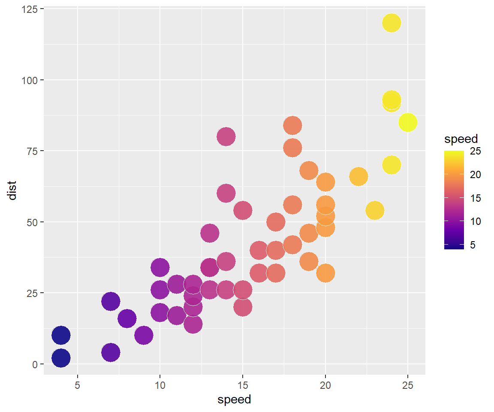

Hi!
–
This ‘minimal flipbook’ template has a couple of classic examples to get you building your first flipbooks!
–
flipbooks are code-movies. The frames of the movies are slides. Here we use the R package {xaringan} to create a remark.js slideshow.
–
Slide breaks are indicated with --- (be careful trailing white space is not allowed)
–
flipbookr’s chunk_reveal() disassembles a single code chunk and creates the “build” of multiple partial-code chunks on different slides (the — is automatically generated for you too).
–
We use chunk_reveal() it ‘inline’, not in a code chunk.
–
Let’s start!
count: false
.panel1-my_cars-auto[
cars #<<]
.panel2-my_cars-auto[
speed dist
1 4 2
2 4 10
3 7 4
4 7 22
5 8 16
6 9 10
7 10 18
8 10 26
9 10 34
10 11 17
11 11 28
12 12 14
13 12 20
14 12 24
15 12 28
16 13 26
17 13 34
18 13 34
19 13 46
20 14 26
21 14 36
22 14 60
23 14 80
24 15 20
25 15 26
26 15 54
27 16 32
28 16 40
29 17 32
30 17 40
31 17 50
32 18 42
33 18 56
34 18 76
35 18 84
36 19 36
37 19 46
38 19 68
39 20 32
40 20 48
41 20 52
42 20 56
43 20 64
44 22 66
45 23 54
46 24 70
47 24 92
48 24 93
49 24 120
50 25 85]
count: false
.panel1-my_cars-auto[
cars %>%
filter(speed > 4) %>%
ggplot() #<<]
.panel2-my_cars-auto[  ]
]
count: false
.panel1-my_cars-auto[
cars %>%
filter(speed > 4) %>%
ggplot() +
aes(x = speed) +
aes(y = dist) #<<]
.panel2-my_cars-auto[ ]
count: false
.panel1-my_cars-auto[
cars %>%
filter(speed > 4) %>%
ggplot() +
aes(x = speed) +
aes(y = dist) +
geom_point(
alpha = .8,
color = "blue"
) +
aes(size = speed) #<<]
.panel2-my_cars-auto[  ]
]
count: false ### user defined break! using #BREAK message 
count: false ### user defined break! using #BREAK message
count: false
cycle through lines of code marked #ROTATE
.panel1-my_fill-rotate[
ggplot(data = cars) +
aes(x = speed) +
aes(y = dist) +
geom_point(size = 8,
shape = 21,
alpha = .9,
color = "snow") +
aes(fill = speed) +
scale_fill_viridis_c(option = "magma") #<<]
.panel2-my_fill-rotate[  ]
]
count: false
cycle through lines of code marked #ROTATE
.panel1-my_fill-rotate[
ggplot(data = cars) +
aes(x = speed) +
aes(y = dist) +
geom_point(size = 8,
shape = 21,
alpha = .9,
color = "snow") +
aes(fill = speed) +
scale_fill_viridis_c(option = "plasma") #<<]
.panel2-my_fill-rotate[ ]
count: false
see multiple realizations of code
.panel1-cars_multi-5[
cars %>%
sample_frac(size = 1, replace = TRUE) %>%
ggplot() +
aes(x = speed) +
aes(y = dist) +
geom_count(
alpha = .7,
color = "blue",
size = 4
) +
geom_smooth(method = lm, se = FALSE) +
coord_cartesian(xlim = range(cars$speed),
ylim = range(cars$dist)) +
theme(legend.position = c(.9, .2))]
.panel2-cars_multi-5[ ]
count: false
see multiple realizations of code
.panel1-cars_multi-5[
cars %>%
sample_frac(size = 1, replace = TRUE) %>%
ggplot() +
aes(x = speed) +
aes(y = dist) +
geom_count(
alpha = .7,
color = "blue",
size = 4
) +
geom_smooth(method = lm, se = FALSE) +
coord_cartesian(xlim = range(cars$speed),
ylim = range(cars$dist)) +
theme(legend.position = c(.9, .2))]
.panel2-cars_multi-5[ ]
count: false
see multiple realizations of code
.panel1-cars_multi-5[
cars %>%
sample_frac(size = 1, replace = TRUE) %>%
ggplot() +
aes(x = speed) +
aes(y = dist) +
geom_count(
alpha = .7,
color = "blue",
size = 4
) +
geom_smooth(method = lm, se = FALSE) +
coord_cartesian(xlim = range(cars$speed),
ylim = range(cars$dist)) +
theme(legend.position = c(.9, .2))]
.panel2-cars_multi-5[ ]
Notes:
This minimal flipbook assumes you are online when you build and view. It is going to find the most recent remark.js info online.
xaringan/remark.js slideshows are not self contained, single file slide shows. Make sure you ship all the associated files that are created to display your flipbooks/slideshows. I like to push .html and associated files to github repository and use Github Pages to host for beyond local sharing. :-)